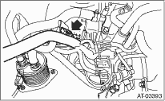
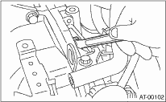

1. Set the vehicle on a lift.
2. Open the front hood and support with the hood stay.
3. Disconnect the ground cable from the battery.
4. Remove the air intake chamber. (Non-turbo model)

5. Remove the intercooler. (Turbo model)
6. Remove the air cleaner case stay. (Non-turbo model)
7. Disconnect the following connectors.
(1) Transmission harness connectors
(2) Transmission ground terminal
8. Remove the starter.
9. Remove the harness from the bracket. (Models with ATF cooler (with warmer feature))

10. Disconnect the ATF cooler hoses from the pipes of the transmission side, and remove the oil charge pipe. (Models with ATF cooler (with warmer feature))

|
(A) |
ATF inlet hose |
|
(B) |
ATF outlet hose |
11. Remove the ATF cooler from the transmission body. (Models with ATF cooler (with warmer feature))

12. Affix the ATF cooler (with warmer feature) to the vehicle using a string, etc. (Models with ATF cooler (with warmer feature))
13. Remove the pitching stopper.

14. Separate the torque converter clutch assembly from drive plate.
(1) Remove the V-belt covers.
(2) Remove the service hole plug.
(3) Remove the bolts which hold torque converter clutch assembly to drive plate.
(4) Place the wrench on the crank pulley bolt, and remove all the bolts while rotating the crank pulley a little bit at a time.
CAUTION:
• Be careful not to damage the mounting bolts.
• Be careful not to drop bolts into the converter case.

15. Attach the ST to the converter case.
| ST 498277200 | STOPPER SET |
16. Remove the ATF level gauge.
NOTE:
Plug the opening to prevent entry of foreign particles into transmission fluid.
17. Remove the throttle body.
18. Disconnect the engine harness, then remove the harness connector from the engine harness bracket.
19. Remove the engine harness bracket. (Non-turbo model)
20. Remove the pitching stopper bracket.
21. Set the ST.
| ST 41099AC000 | ENGINE SUPPORT ASSY |

22. Remove the bolts which hold right upper side of transmission to engine.

23. Lift the vehicle.
24. Remove the under cover.
25. Remove the front, center and rear exhaust pipes and the muffler. (Non-turbo model)
26. Remove the center and rear exhaust pipes and the muffler. (Turbo model)
27. Remove the drain plug (ATF) to drain ATF.

|
(A) |
Oil pan |
|
(B) |
Drain plug (ATF) |
|
(C) |
Differential gear oil drain plug |
28. Disconnect the ATF cooler hoses from the pipes of transmission side, and remove the ATF level gauge guide. (Models without ATF cooler (with warmer feature))
29. Remove the propeller shaft.
30. Remove the shift select cable.
31. Disconnect the stabilizer link from the transverse link.

32. Remove the bolt securing the ball joint of the transverse link to housing.

33. Pull out the front drive shaft from the transmission.
(1) Face the letters “AT” on the ST to the transmission side.
| ST 28399SA000 | DRIVE SHAFT REMOVER |

|
(A) |
Letters “AT” |
(2) Insert the ST between the transmission and front drive shaft.
NOTE:
Set the protrusion of the ST to the torque converter clutch housing.
| ST 28399SA000 | DRIVE SHAFT REMOVER |
|
(A) |
Protrusion of the ST |
|
(B) |
Converter case |
(3) Hold the joint portion (AARi) of the front drive shaft by hand and extract the housing from the transmission by pressing it outside.
34. Remove the bolts which hold the clutch housing cover.
35. Remove the bolts and nuts which hold lower side of transmission to engine.

36. Place a transmission jack below the transmission.
NOTE:
Make sure that the support plates of transmission jack do not touch the oil pan.
37. Remove the transmission rear crossmember from the vehicle.

38. While lowering the transmission jack gradually, fully retract the engine support, and then tilt the engine rearward.
39. Remove the transmission.
NOTE:
Remove the transmission and torque converter as a single unit from engine.

40. Remove the rear cushion rubber from transmission.